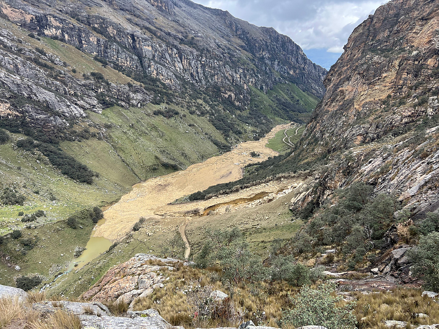

A Destructive Glacial Outburst Flood in Peru
As the glaciers on Vallunaraju, a mountain in Peru’s Cordillera Blanca, have thinned and receded in recent decades, new glacial lakes perched high on its icy slopes have emerged and existing lakes have grown larger. On April 28, 2025, rockfalls sent debris crashing into one new lake, unleashing a destructive flood and debris flow that reached the city of Huaraz. According to Peruvian officials, the torrent damaged or destroyed dozens of homes in the city’s outskirts and led to multiple deaths.
The OLI (Operational Land Imager) on Landsat 8 captured this image (right) of the debris flow’s aftermath on May 7, 2025. The other image (left) shows the same area on May 12, 2024, as observed by the OLI-2 on Landsat 9. Southeast of the glacier, rocky debris and brown sediment blanket the Casca River valley, and one of the lakes near the glacier’s terminus appears to have drained. Signs of damage line the river valley for several kilometers and extend into the outskirts of Huaraz.
A photo taken from the ground shows a cliff with fresh landslide debris. Gray rocky material is piled up at the lower part of the slope.
Christopher Cluett, a senior engineer at the Woods Hole Oceanographic Institution, was preparing to climb Vallunaraju when the debris flow occurred. Cluett reported hearing “consistent rockfall” all morning as his group approached the glacier. Then, at 3:30 a.m. local time, a slide as loud as a “freight train” reverberated through the valley. These photographs, taken by Cluett, show the cliff where the rockfall likely started (above) and flood debris along the Casca River (below).
This type of disaster, known as a glacial lake outburst flood (GLOF), has long posed a risk in this area. In 1941, a similar flood arose from nearby Lake Palcacocha and killed an estimated 4,000 people in Huaraz, a third of the city’s population at the time.
A photo taken from the ground looks down on a river valley with a layer of muddy, rocky material left behind along the banks of the river.
Satellites are helping researchers understand the risks GLOFs pose in this region. One team of researchers used data from Landsat and other sources to confirm that 32 GLOFs occurred in the Cordillera Blanca between 1948 and 2017. Another team’s analysis of Landsat observations identified a marked expansion in the size of the range’s glacial lakes, with the total lake area increasing by 3.7 square kilometers (1.4 square miles) between 1980 and 2020.